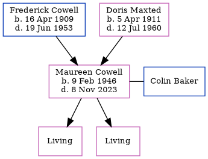

Maureen Joyce Baker (née Cowell) 1946 - 2023
[ Home ] | [ Calendar ] | [ Surnames Index ] | [ Errors ] | [ Family History ]The twin sister of Melvin James and the child of Frederick Cowell (a lorry driver) and Doris Maxted, Maureen Cowell, a cousin on the mother's side of Nigel Horne, was born in Thanet, Kent, England on 9 Feb 19461 along with her twin brother Melvin James and. She was orphaned at the age of 14 following the death of her father in 1953 and mother in 1960.
She married Colin Baker (with whom she had 2 surviving children Annette Jane and Caroline) in Bridge, Kent, England around Feb 19692 (Jan/Feb/Mar Confirmed that this is the correct husband for Maureen Cowell in e-mail conversation.) On 21 Aug 2015, she was living in Bishopsbourne, Kent, England.
She died on 8 Nov 2023.
Parents
- Frederick James was born on 16 Apr 1909
- Doris Annie Minnie was born on 5 Apr 1911
Citations
- England & Wales, Birth Index: 1916-2005 Online publication - Provo, UT, USA: The Generations Network, Inc., 2008.Original data - General Register Office. England and Wales Civil Registration Indexes. London, England: General Register Office. © Crown copyright. Published by permission of the Cont
- England & Wales, Marriage Index: 1916-2005 Online publication - Provo, UT, USA: The Generations Network, Inc., 2009.Original data - General Register Office. England and Wales Civil Registration Indexes. London, England: General Register Office. © Crown copyright. Published by permission of the Cont
Notes
Breast cancer survivor.
Media
England & Wales marriages 1837-2008 - BMD/M/1969/1/AZ/000226/152
England & Wales births 1837-2006 - BMD/B/1946/1/AZ/000273/138
UK electoral registers 2002-2014 Transcription - 192-BAKER-MAUREEN-CT4-1749414534
Family Tree
Map
Generated by ged2site. Last updated on Jul 3, 2024
Known Issues
Parent Frederick is listed in the residence for 1953, but this child is not
Death date (8 Nov 2023) has no citations
Residence record for 21 Aug 2015 contains no citation
Listed in the residence for 21 Aug 2015, but spouse Colin Baker is not
Date of death is known, but not place